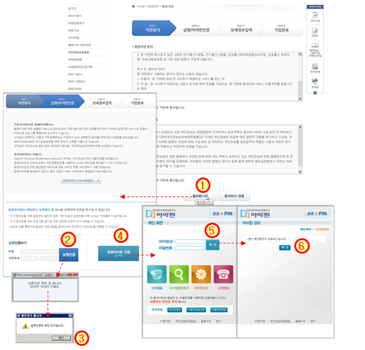

국토지리정보원 홈페이지 회원가입 약관동의 및 실명확인
| ① | 약관동의 화면에서 [동의합니다] 버튼을 클릭하면 실명/아이핀 인증 화면으로 넘어간다. |
| ※ 실명인증 방법은 실명확인과 공공아이핀 인증 2가지 방법이 있다. | |
| ② | 실명인증하기에 이름과 주민번호를 입력하고 [실명인증] 버튼을 클릭하면 실명인증메시지가 나타난다.
|
| ③ | 실명인증 메시지에서 확인버튼을 클릭하여 상세정보 입력화면으로 넘어간다. (5페이지 참조)
|
| ④ | 공공아이핀을 사용하여 실명인증을 할 경우 [공공아이핀] 버튼을 클릭하여 공공아이핀인증 화면이 나타난다.
|
| ⑤ | 아이핀id와 비밀번호를 입력하고 [확인] 버튼을 클릭하면 아이핀 인증완료 화면이 나타난다. |
| ⑥ | 아이핀 인증화면에서 [확인] 버튼을 클릭하면 실명인증이 되어 상세정보 입력화면으로 넘어간다. (5페이지 참조) |